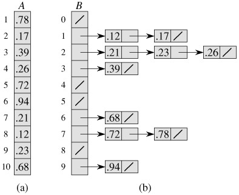

线型时间排序
在排序的最终结果中，各元素的次序依赖于他们之间的比较。我们把这类排序算法成为 比较排序 。它的时间复杂度下界为Ω(nlgn)，归并排序、堆排序等都是比较排序，并且这两个排序算法是比较排序中渐进最优的。
而下面介绍的线性时间排序都不是通过比较来确定排序顺序的，所以下界Ω(nlgn)对它们是不适用的。
1.计数排序
计数排序 假设 n 个输入元素中的每一个都是在 0 打 k 区间内的一个整数，其中 k 为某个整数。当 k=Ο(n)时，排序的运行时间为Ω(n)。
其基本思想是：对每一个输入元素 x，确定小于 x 的元素的个数。利用这一信息，就可以直接把 x 放到它在输出数组中的位置上了。当有几个元素相同时，这一方案要略做修。因为不能把他们都放在同一个位置上。
在计数排序的代码中，假设输入是一个数组 A[1..n]，A.leng = n。我们还需要两个数组：B[n]存放排序的输出，C[0..k]提供临时存储空间。
计数排序的 C 语言实现：
#include <stdlib.h> #include <stdio.h> void counting_sort(int *A, int *B, int k, int size) { int i, j; int *C; C = (int *)malloc(k * sizeof(int)); for (i = 0; i < k; i++) C[i] = 0; for (j = 0; j < size; j++) C[A[j]] = C[A[j]] + 1; //C[i] now contains the number of elements equal to i. for (i = 0; i < k; i++) C[i] = C[i] + C[i - 1]; //C[i] now contains the number of elements less than or equal to i. for (j = size - 1; j >= 0; j--) { B[C[A[j]] - 1] = A[j]; C[A[j]] = C[A[j]] - 1; } free(C); } void counting_sort_easy(int *A, int max, int size) { int i, j; int count[max + 1]; for (i = 0; i < max + 1; i++) { count[i] = 0; } for (i = 0; i < size; i++) { count[A[i]]++; } for (i = 0; i < max + 1; i++) { while(count[i]--) { A[j++] = i; } } } int main(void) { int i; int A[8] = {2,5,3,0,2,3,0,3}; int *B; B = (int *)malloc(sizeof(A)); /* counting_sort(A, B, 6, 8); */ counting_sort_easy(A, 5, 8); for (i = 0; i < 8; i++) printf("%d ", A[i]); printf("\n"); free(B); return(0); }
 (图片丢失)
(图片丢失)
11～12 行的 for 循环遍历每一个输入元素。如果一个输入元素的值为 i，就将 C[i]值加 1。所以 12 行执行完后 C[i]中保存的就是等于 i 的元素的个数。第 14～15 行通过加总计算确定有多少个元素小于等于 i 的。最后，17～20 行把每个元素 A[j]放到它在输出数组 B 中的正确位置上。
计数排序的第一个 for 循环所花费的时间为Θ(k)，第二个 for 循环花费的时间为Θ(n)，第三个 for 循环所花费的时间为Θ(k)，第四个 for 循环花费的时间为Θ(n)。所以总时间代价为Θ(k+n)。当 k=Ο(n)时，一般会采用计数排序，运行时间为Θ(n)。
另外技术排序还有一个重要的性质就是*稳定*的：具有相同值的元素在输出数组中的相对次序与它们在输入数组中的相对次序相同。
2.基数排序
基数排序是一种用在卡片排序机上的算法，其主要思想是利用稳定的排序（如计数排序）按最低有效位到最高有效位的顺序一次进行排序。其时间复杂度为Θ(n)。
 （图片丢失）最左边一列是输入数据，从左向右显示基数排序了由低位到高位进行排序的情况。
（图片丢失）最左边一列是输入数据，从左向右显示基数排序了由低位到高位进行排序的情况。
基数排序的 C 语言实现：
#include <stdlib.h> #include <stdio.h> /*被排序元素的最大位数，4则意味着只能排序< 10000 的数*/ #define WIDTH 4 #define MAXK 10 //位数划分基于的基数，10表示为10进制划分 void radixSort(int a[], int n) { int i; void innerCountingSort(int a[], int n, int d); for (i = 0; i < WIDTH; i++) { innerCountingSort(a, n, i); } } void innerCountingSort(int a[], int n, int d) { int i, j, x, k[MAXK] = {0}; int *ip = (int *)malloc(n * sizeof(int)); int *bp = (int *)malloc(n * sizeof(int)); int getDValue(int value, int d); for (i = 0; i < n; i++) { ip[i] = getDValue(a[i], d); k[ip[i]]++; } for (j = 1; j < MAXK; j++) { k[j] = k[j] + k[j-1]; } for (i = n - 1; i >= 0; i--) { bp[k[ip[i]] - 1] = a[i]; k[ip[i]]--; } for (i = 0; i < n; i++) { a[i] = bp[i]; } free(ip); free(bp); } /* *获取一个数第d位数的值，位数索引从0开始 */ int getDValue(int value, int d) { for (;d > 0 && value > 0; d--) { value = value / MAXK; } return value % MAXK; } int main(int argc, char *argv[]) { int i; int array[30] = {258, 976, 515, 337, 359, 701, 916, 494, 303, 175, 677, 825, 131, 560, 147, 254, 759, 814, 917, 382, 452, 114, 873, 585, 881, 127, 819, 658, 461, 435}; printf("before\n"); for (i=0; i<30; i++) printf("%d ", array[i]); printf("\n"); /* 排序函数，从个位开始 */ radixSort(array, 30); printf("final\n"); for (i=0; i<30; i++) printf("%d ", array[i]); printf("\n"); return 0; }
（以上代码转载）
3.桶排序

图1 桶排序
伪代码：
BUCKET-SORT（A）
n = A.length
let B[0..n-1] be a new array
for i = 0 to n-1
make B[i] an empty list
for i = 1 to n
insert A[i] into list B[nA[i]]
for i = 0 to n-1
sort list B[i] with insertion sort
concatenate hte lists B[0], B[1], ……, B[n-1] together in order